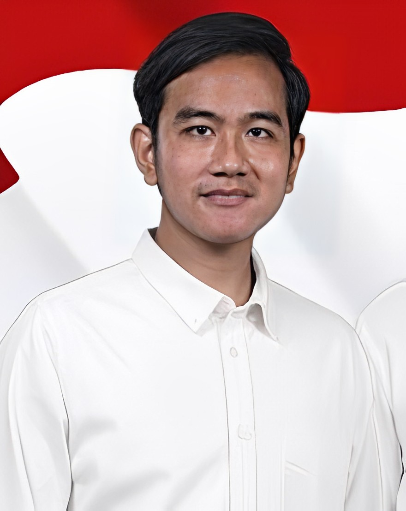

Gibran R.R
Gibran Rakabuming Raka, politisi dan pengusaha Indonesia kelahiran 1988\ , adalah putra dari Presiden Joko Widodo. Terkenal dalam bisnis kuliner, ia juga aktif di dunia politik, mencalonkan diri sebagai kepala daerah Solo pada 2020.

Teguh Prakosa
Siapa Teguh Prakosa? Drs. Teguh Prakosa (lahir 10 November 1958) adalah politik us Partai Demokrasi Indonesia Perjuangan (PDIP). Ia menjabat Wakil Wali Kota Surakarta periode 2021—2024. Sebelumnya ia menjabat sebagai Anggota DPRD Surakarta tiga periode yakni 2009—2014, 2014—2019, dan 2019—2024.